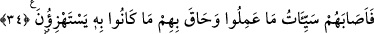

meleği ve yardımcılarının “gelmesinden” Çünkü onlar bu azaba götüren sebepleri
yapmaya dünyâda iken devam ediyorlardı. Sanki onlar bu ölüm meleğinin gelmesini
kasdediyor ve yolunu gözlüyorlardı.
“veya Rablerinin emrinin” yâni dünyevî azabın “gelmesinden” -ki bu azab, Bedr
günü başlarına geldi.- “başka bir şey mi bekliyorlar?” yâni beklemiyorlar.
“Onlardan öncekiler” önceki ümmetler “de böyle” bunların yaptığı şirk, zulüm,
yalanlama ve alay etme gibi fiilleri “yapmışlardı.”
Aşağıda anlatılacak onlara yapılan azab ile“Allah onlara zulmetmedi, fakat onlar”
azaba sebeb olan küfür ve masıyetler ile “kendilerine zulmediyorlardı.”
34. Sonunda yaptıklarının cezası onlara ulaştı ve alay etmekte oldukları şey
onları çepeçevre kuşatıverdi.
“Sonunda yaptıklarının cezası” yâni kötü amellerinin karşılığı “onlara” âdil bir
hüküm olarak “ulaştı ve alay etmekte oldukları şey” vaâdedilen azab “onları
çepeçevre kuşatıverdi.”
[143]. Suyutî, ed-Dürru’l-Mensur, IV, 237
[144]. Terğib, V, 474